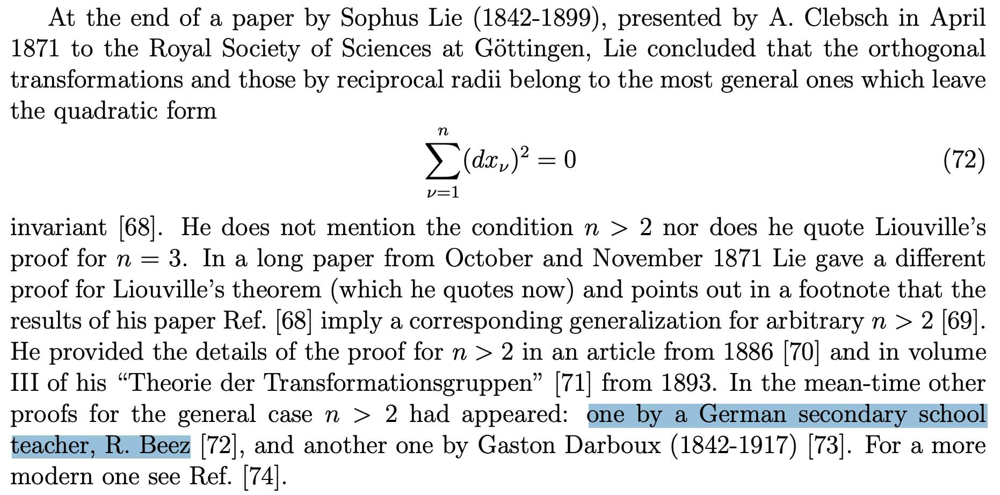

Merkatör (1512-1594)’den beri bir çok matematikçi dünyanın nasıl haritalanabileceği, daha geniş bir bakış açısıyla da küreden düzleme nasıl bir projeksiyon yapılabileceğini araştırıyor. Johann Heinrich Lambert, William Thomson, Joseph Liouville, ve Sophus Lie gibi bir çok matematikçinin de üzerinde uğraştığı bu problem önce 2 boyutta Möbius dönüşümlerinin keşfi, daha sonra orthogonal dönüşümlerin (aslında so(n)’i buluyorlar da daha grup teori tam oturmamış) bulunması, sonrasında da konformal grubun araştırılması ile devam ediyor. Günümüzde bu dönüşümler klasik fizikte gayet iyi biliniyor ve kullanılıyor, kuantum fiziğinde de özellikle son 30 yılda baya geliştirildi.
Resmi paylaşmamın sebebiyse başka: Şu yüzyıllardır süregelen süreçte almanyadaki bir ortaokul hocası da kendi katkısını yapmayı başarmış. Öyle ki bu konformal dönüşümler 2 boyutta ve 2 boyutun üzerinde oldukça farklı. 2 boyutta çok daha iyi anlaşılmış durumdalar, hatta tam olarak bu sebeple de sicim teorisinde başarıyla kullanılıyorlar (sicim teorisinde sicimler 2 boyutlu konformal simetrinin olduğu bir çarşafta [worldsheet] yaşarlar). Oysa 3 boyutta ve daha ötesinde konformal dönüşümler oldukça sınırlı (aslında yüksek boyutlu bir orthogonal gruba eşdeğerler), bu ortaokul hocamız da bunu ispatlayan makalelerden birini yazmış!
